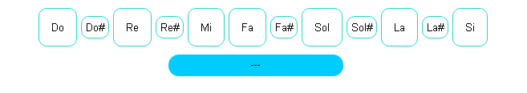
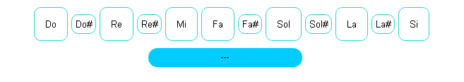
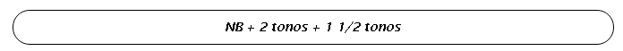

Necesitas Ayuda?
Para poder ver el acode de la nota que deseas, simplemente presiona el boton de la nota dentro de la seccion de acordes y automaticamente aparecera en el recuado azul sus notas respectivas que lo conforman.
Para poder ver el acode de la nota que deseas, simplemente presiona el boton de la nota dentro de la seccion de acordes y automaticamente aparecera en el recuado azul sus notas respectivas que lo conforman.
Para entender de la mejor manera la logica de la formula de cada uno de los acordes, ten en cuenta que NB significa nota base, quiere decir que esta sera la nota inicial, y luego tu le sumaras los tonos que se requieren para formar en sutotalidad al acorde, por supuesto dentro de la escala del mismo
